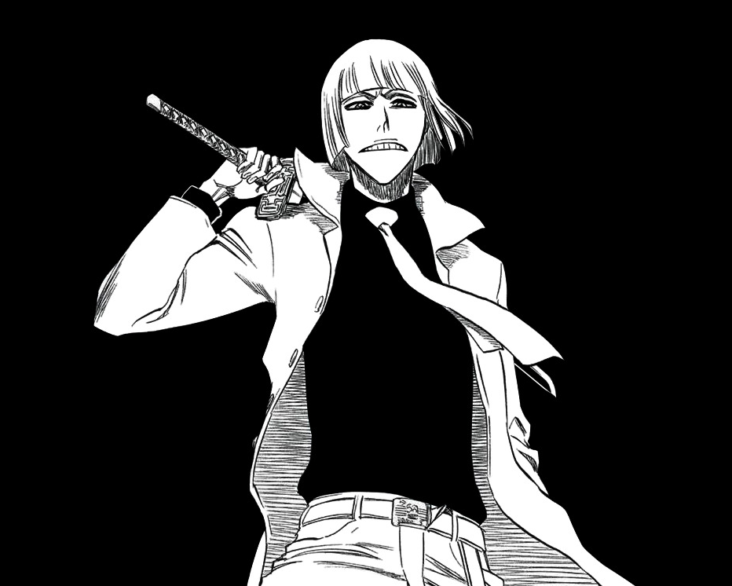

Shinji Hirako (平子 真子)
Shinji Hirako (平子 真子, Hirako Shinji) is the captain of the 5th Division in the Gotei 13. His lieutenant is Momo Hinamori. He also served as a recruiter and the de facto leader of the Visored. He was also a captain over 100 years ago prior to his exile and was reinstated to his old post sometime after the battle against Sōsuke Aizen.
Character Details
- Role: Captain of the 5th Division, Former Leader of the Visored
- Affiliation: Soul Society, Gotei 13
- Species: Shinigami-Hollow Hybrid (Visored)
- Zanpakutō: Sakanade (逆撫, Counter Stroke)
- Shikai: Collapse (倒れろ, taorero)
- Shikai Special Ability: Sakasama no Sekai (逆様の世界, Inverted World)
- Bankai: Sakashima Yokoshima Happōfusagari (逆様邪八宝塞, Reversed Evil Eight Treasure Blockade)
Shikai Special Ability
Sakanade's primary technique, "Sakasama no Sekai" (Inverted World), inverts the opponent's perception of direction, making left appear right, up seem down, and forward become backward. This disorients the opponent, allowing Shinji to control the battlefield.